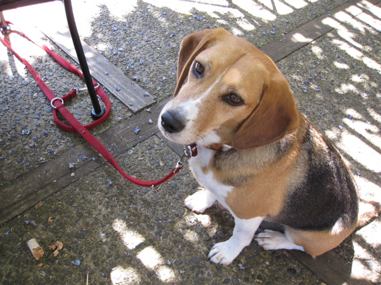

<--Previous Up Next-->

Erath Vineyards
Wineries are all the same if you're a dog -- unless you get to chew on the cork. Erath Vineyards, in the red hills of Dundee, is one of the oldest wineries in the northern Willamette Valley. These days they mostly make large volumes of unremarkable wine, but they have a great terrace. Huxley was happy enough with a cork from a bottle of their Pinot Gris.